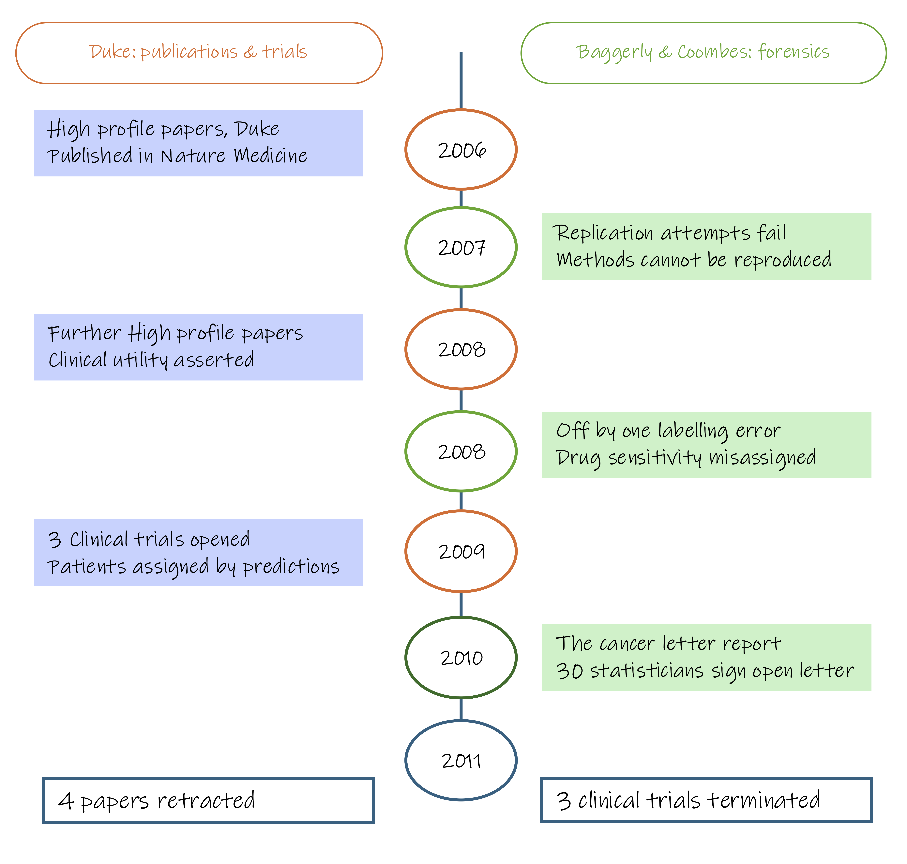

Module 1.2.2: Data acquisition
Data reach a study one of two ways: you generate them yourself, or you use what someone else generated. Both paths carry technical structure; what differs is how much of that structure you control.
| Path A: generate your own data | Path B: use existing data | |
|---|---|---|
| Benefits | Full control over sample selection, collection protocol, processing conditions, and batch structure | Faster and lower cost; large existing cohorts may not be reproducible |
| Burdens | Time-intensive; recruitment, extraction, and sequencing happen in stages, introducing batch structure by default | Batch structure is fixed and cannot be redesigned; cohort, protocol, instrument, and pipeline are bundled into a single label you cannot separate |
| Key risk | Batches that align with your biological comparison — e.g. cases processed in year one and controls in year three | Using a public dataset to supply one arm of a comparison: disease and study become perfectly confounded |
| Key advantage | You choose which samples go into which batch — the fix is available before any processing begins | Excellent as an independent validation cohort, or when each dataset contributes both comparison groups |
Path A: collect and sequence your own
In most studies, samples cannot processed all at once. Recruitment of participants runs over months or years, wet lab work happen on different days, and sequencing occurs run by run. Each of these groupings is a batch.
Batches are unavoidable, they are a structural feature of how omics work is done. They become a problem when a batch aligns with the biological comparison. If all cases were processed in one batch and all controls in another, batch and biology are the same variable and cannot be separated.
On this path, you decide which samples go into which batch. That means the problem is preventable: distributing cases and controls across batches, and recording which sample was processed when, removes the confound before it occurs.
Path B: using someone else's data
When using existing data, the batch structure is fixed. The entire study, cohort composition, collection protocol, extraction kit, instrument, and analysis pipeline, is bundled together and cannot be separated.
The most common problem arises when existing data supplies only one arm of a comparison: your own cases paired with public controls, or vice versa. Every case now shares one study and every control shares another. Disease status and study of origin are the same variable. The data cannot tell you whether the observed differences between groups reflect biology or the difference between two laboratories.
Whether existing data can supply one arm of a comparison depends on the platform. In genomics, using a public control population is a well-established and accepted practice, genotype data is largely robust to differences in collection and processing protocol. In expression-based omics (transcriptomics, proteomics, metabolomics, epigenomics), the measured signal is highly sensitive to collection conditions. Mixing your own samples with a public dataset on these platforms risks introducing technical differences that are indistinguishable from biological signal.
Public datasets are well-suited as independent validation cohorts for findings already made in your own data, or when each dataset contributes samples from both comparison groups.
The two pitfalls below apply on both paths.
Consideration 4: Batch effects
A batch effect is a systematic technical bias introduced when samples are processed under different conditions; different sequencing runs, reagent lots, operators, instruments, or processing dates. Unlike random noise, batch effects produce consistent, reproducible patterns in the data that can resemble biological variation or mask it entirely.
Unrecoverable design example: All cases were processed in Batch 1 (2023) and all controls in Batch 2 (2026). Any observed differences between groups are driven by processing year as much as by biology. Because batch and biological group are perfectly aligned, there is no way to determine which differences are technical and which are real. This design is unrecoverable.
Recoverable design example: Cases and controls are distributed across both batches. Both groups are represented in each batch, so the batch effect can be estimated independently of the biological comparison. The batch effect is now separable and can be corrected statistically. The biology is recoverable.

Controlling for batch effects
When batch effects are present but not confounded with biology, they can be modelled and removed. This is only possible when batch membership has been recorded in the study metadata, which is why systematic record-keeping is essential at the point of data collection.
Common approaches include:
| Source | Examples | Mitigation at acquisition |
|---|---|---|
| Processing batch | Samples extracted or prepared on different days | Process all samples in a single batch where possible; if not, distribute comparison groups across batches |
| Operator or protocol variation | Different technicians, reagent lots, kit versions | Standardise protocols; record all deviations as metadata |
| Run order / instrument drift | Signal intensity changing across a sequencing or MS run | Randomise sample run order; include quality control samples at regular intervals |
| Plate or array position | Edge effects on microarrays or multi-well plates | Randomise sample placement; avoid confounding group membership with position |
Statistical approaches for removing residual batch effects after acquisition are covered in Stage 4.
None of these methods can recover signal from a design where batch is fully confounded with biology. They require that at least some samples from each biological group appear in each batch.
Case Study: When batch effects reach the clinic
Between 2006 and 2011, Anil Potti and colleagues at Duke published a series of high profile papers claiming to have developed genomic predictors of chemotherapy response in cancer patients using gene expression microarrays. Three clinical trials were opened using these predictors to assign patients to treatment arms.
Keith Baggerly and Kevin Coombes at MD Anderson had been trying and failing to replicate the research methods, finding systematic errors in how the data had been processed; including off by one errors in the assignment of drug sensitivity labels to cell lines and undisclosed batch effects in the training data.

Outcome: The trials were halted. The case became a landmark example of how undetected batch effects, combined with lack of reproducibility, can cause direct patient harm. Ref: Baggerly & Coombes, Ann. Appl. Stat. 2009
Consideration 5: Experimental controls
Design principle
Controls must be planned before data collection begins. A control that was not included cannot be reconstructed from the data after the fact.
Experimental controls serve a different purpose from biological replicates. Where replicates capture biological variability across individuals or conditions, controls capture the behaviour of the measurement process itself thereby confirming that the assay worked, flagging contamination, and providing a baseline against which to assess technical noise.
In omics experiments, where samples undergo many processing steps in the wet lab before measurement, there are many points at which technical failure can introduce signal that is indistinguishable from biology. Without controls, there is no way to know whether an observed difference reflects the biology of interest or an artefact of how the samples were handled.
Controls generally fall into four categories:
| Control type | Purpose | Examples | Failure indicates |
|---|---|---|---|
| Negative control | Detect contamination introduced during processing | Extraction blank, no-template control, solvent blank | Contamination present in all samples processed in the same batch |
| Positive control | Confirm the assay is functioning | Reference RNA of known concentration, known peptide mixture | Results from the same run cannot be trusted |
| Spike-in | Assess technical variability between samples; support normalisation | ERCC spike-ins (RNA-seq), stable isotope-labelled internal standards (metabolomics, proteomics) | Run-to-run variation is confounded with biological signal |
| Technical replicate | Estimate measurement reproducibility | Repeated measurement of the same sample across runs or within a run | Instability in the assay or instrument |
Some platforms have additional platform-specific controls that address particular sources of technical failure:
| Molecular layer | Sequencing type | Control | What it detects |
|---|---|---|---|
| Genome | 16S metagenomics | Negative extraction control | Kit reagent contamination which is a known problem with low-biomass samples |
| Transcriptome | Bulk RNA-seq | RNA integrity (RIN score) | Degradation during extraction or storage |
| Transcriptome | Single-cell RNA-seq | Empty droplet controls; ambient RNA assessment | Doublets, cell-free RNA contaminating the droplets |
| Proteome | Liquid chromatography mass spectrometry | Blank injections; digestion controls | Carryover between runs; incomplete digestion |
| Metabolome | Liquid/gas chromatography mass spectrometry | Pooled QC samples at regular intervals | Instrument drift across the run; used for signal correction |
| Epigenome | DNA methylation | Bisulfite conversion efficiency control | Incomplete conversion, which inflates apparent unmethylated signal |
The appropriate controls for a given study depend on the platform, the sample type, and the expected sources of technical variability. They should be identified during study design, budgeted for as part of the sample count, and randomised into the run order alongside the experimental samples — not added at the end of a run as an afterthought.
Module 1.2.2 takeaways
- Data can be generated or reused from existing sources; the key difference is how much control you have over the technical structure of the data
- Batches are unavoidable in omics studies. They become a problem when batch membership aligns with the biological comparison
- Distributing comparison groups across batches and recording batch membership as metadata are the primary defences against batch confounding. Statistical correction methods can address residual batch effects when the design allows batch to be estimated independently of biology
- Using a public dataset to supply a single arm of a comparison is problematic for expression-based omics, where measured signal is sensitive to collection and processing conditions. In genomics, using a public control population is an accepted practice
- Experimental controls are distinct from biological replicates — they monitor the behaviour of the measurement process, not biological variability. They must be planned before data collection begins and cannot be added retrospectively
- The appropriate controls depend on the platform. Negative controls detect contamination; positive controls confirm assay function; spike-ins support normalisation and detect run-to-run variation; technical replicates estimate measurement reproducibility.